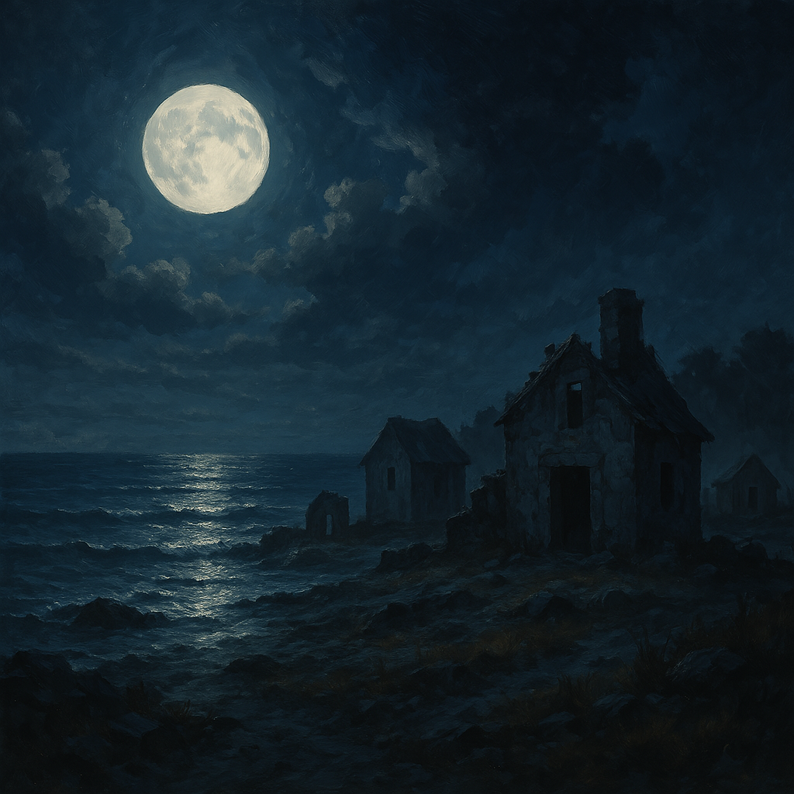

Chapter 3: Memories
Before the Next Full Moon

Before the Next Full Moon
15051.05.08
在船上，從夢中驚醒的 Siri 看著手上的紙條。思索著其中的秘密。黑暗中，Midori 詢問 Siri 發生了什麼事情。言談之間，忘記壓低音量的兩人吵醒了剩餘的夥伴，於是大伙決定一起到甲板上就著月光仔細研究一下 Siri 手上的字條。Midori 觀察了一下謎題，發現上面畫著的符號是關於行星的記號，但剩下的部分她也不清楚有什麼意義。同時 Midori 也提到她關於天文學的知識是小時候在方努爾市中，一個叫做墨奎斯咖啡廳的地方學來的。由於南方出身的小孩子很多都嚮往長大要成為一名水手，而基礎的天文知識是成為水手的基本條件。所以很多水手會在工作之餘跑到咖啡廳向年輕小孩子吹噓他們的知識。冒險者們魚貫走到了夜晚的甲板上，上頭有一名正在值班的水手，他名叫 Leo，或是可以稱呼他為「船夫船夫」。Leo 向他們解釋了行星運行的原理，也向冒險者介紹了這個世界大致上的樣子，冒險者也熱切的和 Leo 討論著關於地平說、世界盡頭的冰山以及風暴神之類的話題。在沒有進一步線索的情況下，冒險者決定回到船艙內休息，盤算著到了方努爾市後可以再去墨奎斯咖啡廳打聽打聽消息。
就在 Beau 準備下到船艙的時候，Midori 從後面叫住了她，表示有些事情想單獨和 Beau 聊一聊。Midori 向 Beau 詢問為什麼會想要問起 Midori、Yuki 她們小時候的事情以及 Natasha。同時 Midori 也向 Beau 坦承了她因為小時候曾被朋友背叛過，所以很害怕再次被同伴背叛。Beau 沒有正面回答 Midori 的問題。她反過來詢問 Midori 如果有必要與 Yuki 為敵時，Midori 有沒有辦法做到。Midori 很清楚的表達了既使如此，她也不會讓人傷害 Yuki。於是 Beau 表示自己需要多一點時間思考，但是將來一定會把事情跟 Midori 解釋清楚。接著 Midori 說想要在甲板上再思考一些事情。於是 Beau 走向了船的側舷，將山洞中找到的、Yuki 寫的信件拋入了大海之中……
15051.05.09
Ron 背著受傷的瑪莉，指揮著工人把瑞斯以及小男孩的屍體從孤兒院的地底搬回教堂。回到教堂後，Ron 立刻聯繫了 Robinson 主教，向主教說明了在孤兒院地下發現的神祕傳送陣以及駭人怪物。同時提出了自己的推測:「怪物被擊敗後變成了穿著破爛的小孩子，可能表示怪物是從小孩子變成的。因為孤兒院的小孩和其他市民不同，失蹤了也不會引起太多的關注。是不是意味著 Nimu 孤兒院或是方努爾市其他地區的孤兒院有拉索斯教徒滲透。」Ron 也同時和 Robinson 主教科普了拉茲特獸的長相。Robinson 主教聽了之後相當認同 Ron 的推測，他表示會慎重處理津菈教內部的問題，於是請 Mari 去請法爾班克斯以及伊森利恩過來。
中午過後不久，冒險者們搭乘的船在方努爾市靠岸了，他們決定直接去方努爾市的聖津菈大教堂把瑪林船長的信件交給 Robinson 主教。山田表示她還有事情要去方努爾市的珠寶匠公會處理就先行離開了。剩餘的人在 Midori 的指引之下，大伙搭上了方努爾市特別的貢多拉，經過朱代卡運河，相當迅速地就到達了聖津菈大教堂。就在他們隨著神父的指引進入了主教的辦公室時，他們發現了一個熟悉的面孔，坐在神父辦公室內的正是他們過去的伙伴 Ron。
冒險者們詢問了 Ron 這幾天跑到哪裡去了？同時也對他手上的金鍊子表示好奇。Ron 說他清醒後只過了一天，這一整天他都跟巨錘瑞斯以及瑪莉牧師一起調查方努爾市內的中毒事件。至於巫妖手臂上的金鏈子似乎是津菈教的成員幫他裝上的。可以抑制巫妖手臂的邪惡魔法，所以他現在已經回歸善良龍人了。Ronbinson 主教證實了 Ron 的說法並仔細閱讀了從冒險者手中拿到的報告。他發現聖 Rayami 島以及方努爾市發生的中毒失蹤事件有許多相似之處。於是主教請冒險者和 Ron 互相說明一下彼此的發現。冒險者將在金海岸礦坑找到的拉巴比石交給了主教，Ron 發現那個石頭和他在孤兒院下方發現的石頭一模一樣。更加證明了發生在兩地的事件是有千絲萬縷的關聯。主教詢問冒險者是否知道拉索斯教徒下一步的動作，出於對 Midori 的顧慮，Beau 將 Yuki 極有可能涉入拉索斯教陰謀一事略去，向主教說了他們會在下一個月圓之日在 Natasha 這個地方舉行儀式，可能會將整個南方地區毀滅。
就在他們討論的時候，法爾班克斯和伊森利恩進入了房間。主教向大家說明這兩位是教會的裁判官，專職調查教會內不法以及瀆職事件。法爾班克斯將會協助調查 Nimu 孤兒院的 Emoran 神父。主教話鋒一轉，對著大家宣布伊森利恩將會調查聖騎士 Midori 沒有遵守聖騎士信條的案件。伊森利恩旋即走向 Midori 準備將她逮捕。Samuel、Siri 以及 Beau 立刻提出了異議，他們向主教說明 Midori 很多時候可能做錯了一些事情，但並不是有意要違背聖騎士的信條，很可能只是受到了蒙騙。於是主教直接詢問 Midori 本人是否在旅途中都有遵行聖騎士的信條。Midori 先看向她的伙伴，接著向瑪莉投去了意味深長的一瞥，最後她緩緩的向主教搖了搖頭，接受了伊森利恩的拘捕。
看到 Midori 遭到拘捕，Beau 立刻走向主教，希望最後可以和 Midori 說幾句話。得到了主教的同意後，Beau 跑向正在走下樓梯的 Midori，附在她耳邊說了:「是 Yuki，我們遇到的這些事件都是 Yuki 做的。」不等 Midori 做出任何反應就回到了主教的辦公室。
辦公室內氣氛十分壓抑，Siri 向主教表示若是教會有什麼需要幫忙的事情可以委託冒險者，但是 Midori 是相當重要的成員，希望教會調查結束後可以通知他們。同時 Beau 也直接問了瑪莉為何當初會背叛 Midori，使她從孤兒院逃出的計畫功敗垂成。瑪莉回答對於兩個小孩子而言，從孤兒院逃走自己生活的計畫太過異想天開，她阻止 Midori 也是對她們好。但 Beau 一點也不在乎這些，她向瑪莉說對她而言 Midori 的快樂比什麼都重要。聽了 Beau 的話，瑪莉沒有再多說什麼。隨後主教表示大家都需要一點時間沉澱一下心情，推薦他們先去方努爾市有名的「墨奎斯咖啡廳」休息一天。
瑪莉修女帶領著冒險者們來到了著名的「墨奎斯咖啡廳」。 咖啡廳的內只有兩位客人，一位偵探裝束的金髮女子坐在桌邊看書，而靠近角落的位置上趴著一名蓋著厚重棉襖，熟睡的男子。似乎是被冒險者突然的出現給驚動到了，原先趴在櫃台上的貓咪一躍而下，穿過簾幕進到了後台。正當冒險者還在考慮要向誰搭話的時候。老闆終於出現在櫃台，於是冒險者們向老闆預訂了晚餐以及住宿。
不知什麼原因，貓咪似乎對 Siri 的包包十分感興趣，在晚餐期間一直直勾勾地盯著 Siri 看。老闆介紹貓咪的名字叫做 Mogis，也就是這間餐廳名字的由來。從這間餐廳開始經營的時候 Mogis 就在這裡了，因為方努爾市人認為貓咪可以帶來好運，所以有把貓咪當作店長的習俗。在角落沉睡的男子叫做 Ryon，以前曾經是個做事可靠的船員，但自從某次出海後就性情大變，每天偷偷把酒帶到咖啡廳喝個爛醉。不知道受到了什麼樣的打擊。現在什麼話都聽不進去。特別是在幾個星期前主教下達了禁酒令更導致了 Ryon 整日只會趴在桌上睡覺。如果想跟她打聽什麼消息的話，想辦法搞到一點酒類飲料可能會是最有效的辦法?老闆也提到不久前有一艘滿載高檔葡萄酒的商船擱淺在方努爾市港灣的外面，可以去那邊碰碰運氣。
另一名金髮女子似乎對他們的話題很感興趣，於是湊了過來一起聽。女子介紹自己叫做 Amelia Watson，在這裡協助津拉教調查近期發生的中毒事件。這個時候 Siri 把包包中的東西一件一件拿出來，看看 Mogis 到底為什麼如此躁動。Siri 一把他在夢中得到的紙條拿出來，Mogis 立刻安分了下來。對此所有人都感到很驚奇。華生詢問 Siri 可不可以讓她仔細看一下那張紙條。接著華生探測了一下紙條上的魔法，告訴他們這個紙條的魔法集中在中間的符號部分。YHWH 好奇的問了華生她先前在看的是什麼書。華生悄悄表示是死靈學派相關的書籍，YHWH 可能不會感興趣。YHWH 詢問了華生是不是可以跟她借來看看內容。華生略為考慮了一下就把書遞給了 YHWH，這是一本叫做「魂、骨與血」的書，作者叫做 Icesack Neoton，內容是關於死靈法術的研究，例如如何把人類利用儀式轉化為怪物以及如何喚回已死的靈魂。不過 YHWH 發現這本書僅僅只是上半部，書的下半部不知道跑到哪裡去了。華生說她也是因緣巧合得到這本書的上半部，因此也沒有讀過這本書的後半部分。眼見得不到更多的訊息，冒險者們打算先休息一晚，隔天早上在看 Midori 的狀況做決定。
15051.05.10
深夜，Siri 又聽到了有水滲入房間的聲音，接著就像浸入水中一般眼前一黑。當他再次睜開眼睛時，又回到了 Traum 的沙灘上。上次夢中的藍髮小女孩對著 Siri 說:「你回來了!快點，要上課了」接著伸手把 Siri 從沙灘上拉起。Siri 環顧四周，發現和上次不同，這次他的夥伴也到了這裡，甚至連瑪莉都出現了。小女孩催促着 Siri，要 Siri 趕快準備好。滿頭霧水的 Siri 只好趕緊把睡夢中的夥伴叫醒，接著跟上小女孩的腳步。夥伴們對於眼前的狀況都無法理解，但是 Siri 自己也提不出任何合理的解釋，只能跟夥伴解釋這就是他上次夢中出現的場所。接著小女孩打斷 Siri 的話，詢問 Siri 找到自己的符號了嗎?Siri 表示目前還沒有進展，同時把紙條拿給小女孩看。小女孩看了一眼之後，伸手在紙上一揮，紙條上的墨水飛起，接著最前面的符號竄到了小女孩的掌心，小女孩順勢就把它收到了口袋裡。眾人都覺得很驚奇，紛紛問起小女孩的命字，小女孩表示在島上，大家都有代表自己的符號，彼此之間很少以名字稱呼。但是如果要找個稱呼的話，可以叫她 Juno。接著 Juno 說著他們上課要遲到了並領著冒險者走向島的中心。
在接近樹林邊緣的一座涼亭邊，Juno 停了下來，並指引大家入座。老師是上次 Siri 見過的削瘦男子，男子向冒險者們講述了洞穴寓言的故事，同時詢問了 Siri 對於真實世界的看法。Siri 表示還太多無法理解的事情，完全做不出判斷。男子對著其他的冒險者說:「對於你們，這裡毫無疑問就僅僅只是一場夢。」
「但你不同。對於我們來說，這裡就是真實世界，畢竟，你屬於這裡。」男子轉向 Siri 對他這麼宣布。冒險者們問起男子的名字，就像 Juno 一樣，男子說可以用 Saturn 稱呼他。接著 Siri 詢問有沒有其他的線索可以幫助他更認識真正的自己，Saturn 嘗試想對 Siri 說些什麼，但是他的嘴巴卻發不出聲音，Saturn 喃喃自語說看來你還不被允許知道這些。於是他請在場的所有人把手牽起來，圍成一個圓。隨著時間過去，一陣詭異的濃霧升起，將在場所有人團團包圍。
濃霧散去後，冒險者們發現他們已經身處另一個地方。Siri 驚奇的發現這裡就是他在井中看到小女孩身影穿梭的地方。緊接著，一個綠色頭髮的小女孩從斜坡下跑上來。瑪莉似乎認得這名小女孩而顯得十分驚訝。氣喘吁吁的小女孩不斷的在每一間房子的廢墟中穿梭，急切的想要找到什麼。冒險者們發現這個小女孩似乎看不到他們。於是瑪莉以及幾位冒險者跟著這位小女孩在廢墟間穿梭，但 Saturn 帶著 Siri 逕直走向其中最大的一個廢墟，進去後 Saturn 走向了一個書櫃，等待著。Siri 嘗試著打開書櫃，但卻發現自己碰不到書櫃，於是向 Saturn 詢問這一切是怎麼回事。Saturn 只是淡漠的表示這是你必須完成的事情。就在他們談話的時候，冒險者以及綠髮小女孩也來到這個房間，小女孩快速地打開了書櫃，從中取出了一本陳舊的書籍後就離開了。整個空間也再次被濃霧所籠罩。
Saturn 的聲音從濃霧中傳來:「或許那名女孩對了解你的真實身份有所幫助。試著找到她，以你的智慧來判斷是不是要幫助她」接著，Siri 從床上驚醒。